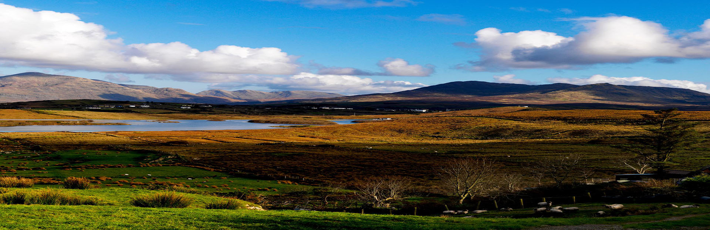

Sligo
Known for its literary heritage and rugged countryside

Galway
A popular meeting spot surrounded by shops and traditional pubs that often offer live Irish folk music.

Donegal
Dramatic views, clifftop wonders and a land etched with history.